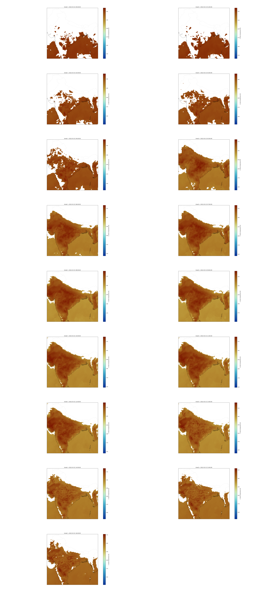
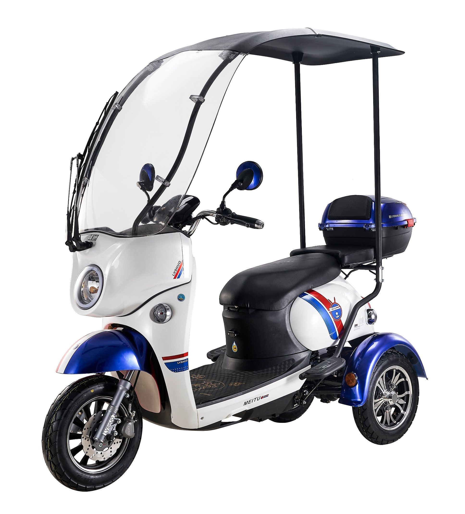

Analysis
An increase in temperature has an effect on our daily life and habitat. According to the studies, India might witness a rise in a heatwave during day and night. Following are a few analyses made using air temperature on the day 2022-03-31 from 00:00:00 to 16:00:00.
Click here to know more about the studies on heat waves
Many places in India keep schools only for half a day in the month of March, and April. This is to safeguard students
from the heat waves generated. Heatwaves might affect students while playing or having lunch in an open area. This is
the reason schools keep classes from 7:00 am to 12:00 pm and students disperse by 12:30 pm. But according to the
analysis, I suggest that the temperature from 12:00 pm would be high as compared to 11:00 am. Hence,
I propose that schools should have classes from 7:00 am to 11:00 am.

Generally, in India, many places experience power cuts -off and this might due to energy crises or some other reason.
From my personal story, when I was 14 years old, from the month of march every day there used to be a power cut in the
afternoon and during summer, power cut was a terrible experience, in order to overcome the heat I used to do bath thrice a day.
Due to power cuts, many experience heat and sweat this can lead to sweat pimples which can be horrible in some cases.
Hence, I suggest power cut in the evenings would be a better idea as temperature be less comparative to afternoon.
Power cut during the night would be a bad idea as it is a relaxing time for every individual and morning is not
possible as it is the time to get ready for the daily purpose needs.
For about 58% of Indians, agriculture is the primary source of livelihood. Daily workers are hired for doing
the farm works like taking off the crops, plucking fruits, and many others. Most of them work till 2:00 pm which
affects their health. Hence, working in the morning or evening hours would be better for them to stay healthy.
Since, many villagers wakeup early, I suggest them to work from 6:00 am to 11:00 am and also evening they can continue thier works.
India is one of the countries which is rich in culture, and tradition. Many visit India but step out at the wrong time.
Hence, going out from 6:00 am to 11:00 am and 4:00 pm till night would be better to avoid sunburns. This practice helps
not only visitors but also locals who be there every time in order to satisfy the needs of the visitors and to run their business.
This would help not only visitors but locals to protect themselves from the effect of heat.
Age category below 18 years and above 45 would be dangerous to step out in the afternoon which sometimes
results in worse. According to the analysis, they can go out in the morning and evening times.
Also, avoiding going pregnant ladies outside in the afternoon would help them to be safe and healthier.
For the individual who falls in the above age category, adjusting the working hours during the summers
would help them to be safe. For the working ladies, during their pregnancy, extending their maternity
leaves would be helpful for them during summers.
Nowadays, electric vehicles are used by many as it saves fossils and also the maintenance amount is less. But recently, electric vehicles are catching up fires when they are left in the heat
and resulting in the death of the bikers who ride them. In order to avoid it, not using it from 12:00 pm till 4:00 pm would be safe. Parking in the shaded regions and also inbuilt scooter umbrellas
during summers would help many to save their lives. These inbuilt scooter umbrellas get in use not only during summer but also during rainy and winter seasons.

Many states in India implemented Ac buses to travel but many use non-ac buses as they cost less, but in the month
of March, April, and May many use AC buses to protect themselves from heat. So running the AC busess from 11:00 am
till 5:00 pm would be better rather than the whole day. Running the AC buses at a particular time during the day,
reduces the cost of fuel used in them and the government can also reduce the cost of the ac buses in this scenario
hence most people would opt for the AC buses to travel safely and effortlessly in the afternoon time.
In India, many people raise cows, buffalos, goats, sheep, and pigs for meat and also for other dairy products.
But in some cases, people take them from morning to evening which results in affecting the health of animals.
Hence, I suggest feeding animals in the evening would be preferable and in the morning and afternoon feeding
them at their places would be better as it helps in maintaining a healthier life for animals.
Note: Here, I am speaking about the animals which people raise in their homes.
In India, villagers raise animals to full fill their daily purposes. Hence, the proposed idea would work fine.